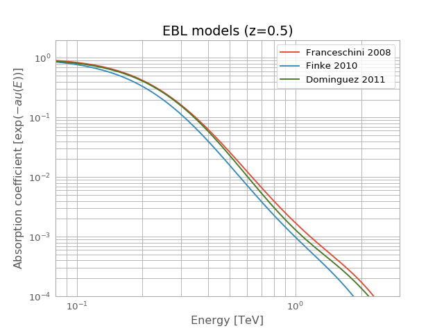

Absorption¶
-
class
gammapy.spectrum.models.Absorption(energy_lo, energy_hi, param_lo, param_hi, data)[source]¶ Bases:
objectGamma-ray absorption models.
Parameters: energy_lo, energy_hi :
QuantityLower and upper bin edges of energy axis
param_lo, param_hi :
QuantityLower and upper bin edges of parameter axis
data :
QuantityModel value
Examples
Create and plot EBL absorption models for a redshift of 0.5:
import matplotlib.pyplot as plt import astropy.units as u from gammapy.spectrum.models import Absorption # Load tables for z=0.5 redshift = 0.5 dominguez = Absorption.read_builtin('dominguez').table_model(redshift) franceschini = Absorption.read_builtin('franceschini').table_model(redshift) finke = Absorption.read_builtin('finke').table_model(redshift) # start customised plot energy_range = [0.08, 3] * u.TeV ax = plt.gca() opts = dict(energy_range=energy_range, energy_unit='TeV', ax=ax) franceschini.plot(label='Franceschini 2008', **opts) finke.plot(label='Finke 2010', **opts) dominguez.plot(label='Dominguez 2011', **opts) # tune plot ax.set_ylabel(r'Absorption coefficient [$\exp{(- au(E))}$]') ax.set_xlim(energy_range.value) # we get ride of units ax.set_ylim([1.e-4, 2.]) ax.set_yscale('log') ax.set_title('EBL models (z=' + str(redshift) + ')') plt.grid(which='both') plt.legend(loc='best') # legend # show plot plt.show()
(Source code, png, hires.png, pdf)
Methods Summary
evaluate(energy, parameter)Evaluate model for energy and parameter value. read(filename)Build object from an XSPEC model. read_builtin(name)Read one of the built-in absorption models. table_model(parameter[, unit])Table model for a given parameter ( TableModel).Methods Documentation
-
classmethod
read(filename)[source]¶ Build object from an XSPEC model.
Todo: Format of XSPEC binary files should be referenced at https://gamma-astro-data-formats.readthedocs.io/en/latest/
Parameters: filename :
strFile containing the model.
-
classmethod
read_builtin(name)[source]¶ Read one of the built-in absorption models.
Parameters: name : {‘franceschini’, ‘dominguez’, ‘finke’}
name of one of the available model in gammapy-extra
References
[R7] Franceschini et al., “Extragalactic optical-infrared background radiation, its time evolution and the cosmic photon-photon opacity”, Link [R8] Dominguez et al., ” Extragalactic background light inferred from AEGIS galaxy-SED-type fractions” Link [R9] Finke et al., “Modeling the Extragalactic Background Light from Stars and Dust” Link
-
table_model(parameter, unit='TeV')[source]¶ Table model for a given parameter (
TableModel).Parameters: parameter :
floatParameter value.
unit :
str, (optional)desired value for energy axis
-
classmethod
{kind=link}
{kind=link}